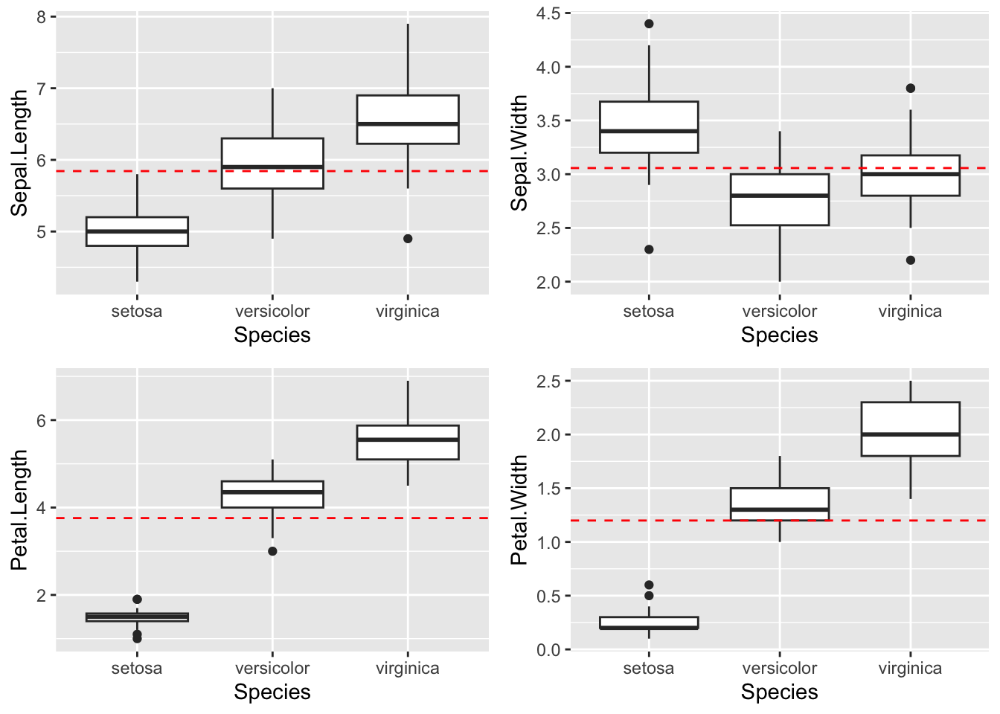
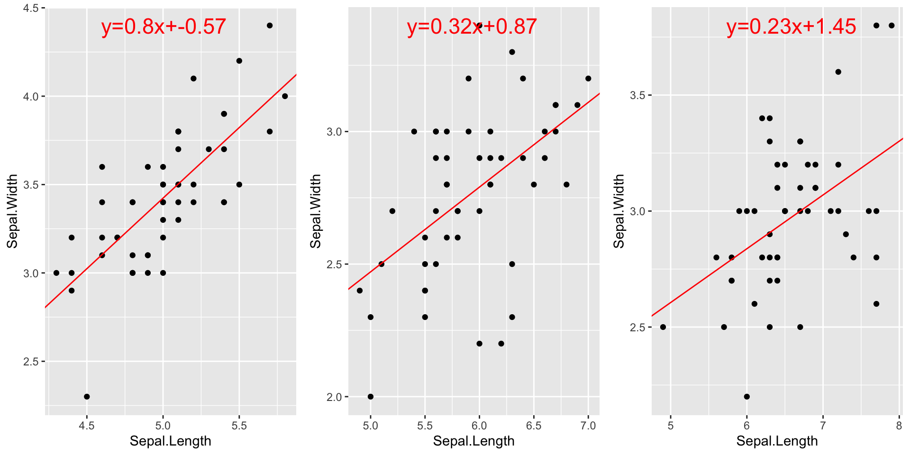
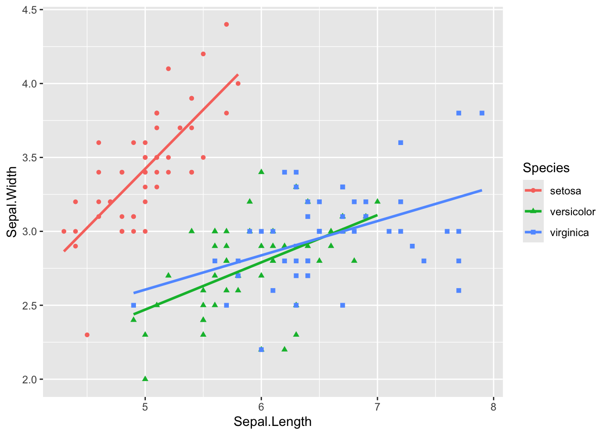

x<-runif(1,-10,10)
if(x>0){print(paste("La valeur",round(x,1),"est positive",sep=" "))}[1] "La valeur 6.1 est positive"if(condition){instruction} permet de calculer des instructions uniquement lorsque la condition est vraie.
Regarder l’aide des fonctions runif et paste pour comprendre ce qu’elles retournent.
x<-runif(1,-10,10)
if(x>0){print(paste("La valeur",round(x,1),"est positive",sep=" "))}[1] "La valeur 6.1 est positive"if(condition){instruction1}else{instruction2} permet de calculer l’instruction1 lorsque la condition est vraie et l’instruction2 lorsque la condition est fausse.
x<-runif(1,-10,10)
if(x>0){
print(paste("La valeur",round(x,1),"est positive",sep=" "))}else{
print(paste("La valeur",round(x,1),"est négative",sep=" "))}[1] "La valeur -3.9 est négative"On peut imbriquer plusieurs conditions if.
Rappel :
l’opérateur | correspond à OU : A | B est faux lorsque les deux événements A et B sont faux simultanément.
l’opérateur & correspond à ET : A & B est vrai uniquement lorsque les deux événements A et B sont vrais.
Exercice :
x<-runif(1,0,10)
y<-runif(1,0,10)
if(x<y){z<-x+1}else if(x>5 & y>5){z<-x+2}else{z<-x}
print(paste("x=",x,"y=",y,"z=",z))[1] "x= 7.44791538920254 y= 4.94685018435121 z= 7.44791538920254"for (var in seq) {commandes} permet de définir un nombre d’itérations dans une séquence.
Par exemple on veut Stocker dans la variable x la somme des entiers de 1 à n où n est fixé par l’utilisateur :
n<-100
x<-0
for(i in 1:n){x<-x+i}
print(x)[1] 5050Mais on peut aussi faire la somme de tous les entiers impairs compris entre 1 et n
n<-100
x<-0
impairs<-seq(1,n,2)
for(i in impairs){x<-x+i}
print(x)[1] 2500Exercice : On considère deux variables \(x,y\) initialisées à 0. On propose le jeu suivant : “à chaque itération on tire un nombre au hasard entre 0 et 1, lorsque ce nombre est supérieur à 0.5 on incrémente la valeur précédente de \(y\) de 1, sinon c’est la valeur précédente de \(x\) qui est incrémentée de 1.”
Le joueur gagne si au bout de \(n\) itérations \(y>x.\) Ecrire le programme pour \(n=10.\)
n<-10
y=x=0
for(i in 1:n){
a<-runif(1,0,1)
if(a>0.5){y<-y+1}else{x<-x+1}
}
if(y>x){print("Gagnant")}else{print("Perdant")}[1] "Gagnant"while(condition){instruction} répète une instruction tant que la condition considérée est vraie. Attention, la condition est évaluée avant toute exécution dans while.
i<-1
while (i<10){
print(i)
i=i+1}[1] 1
[1] 2
[1] 3
[1] 4
[1] 5
[1] 6
[1] 7
[1] 8
[1] 9Exercice
déterminer le vecteur IND qui contient les indices des valeurs strictement supérieures à 50, (avec une boucle et sans une boucle)
déterminer le vecteur VEC contenant ces valeurs.
On calcule le maximum du vecteur vecAlea. Déterminer à l’aide d’une boucle le nombre de fois où ce maximum apparaît dans vecAlea. Retrouver ce nombre sans utiliser de boucle.
Créer le vecteur nommé vecPM5 contenant tous les nombres de 1 à 100 qui ne sont pas des multiples de 5 (avec une boucle puis sans). Penser à la fonction floor qui calcule la partie entière.
vecAlea<-sample(1:100,100,T)
## Q1
## AVEC la boucle
IND<-c()
for(i in 1:100){
if(vecAlea[i]>50){IND<-c(IND,i)}
}
# SANS LA BOUCLE
IND<-which(vecAlea>50)
VEC<-vecAlea[IND]
## Q2
M<-max(vecAlea)
IND_M<-c()
for(i in 1:100){
if(vecAlea[i]==M){IND_M<-c(IND_M,i)}
}
length(IND_M)[1] 1length(which(vecAlea==M))[1] 1## Q3
x<-c()
i<-1
while(i<=100){
if(i/5-floor(i/5)>0){x<-c(x,i)}else{x<-x}
i<-i+1
}On veut écrire une fonction qui étant donnée le rayon \(r\) d’un cercle permet de calculer son périmètre \(P=2\pi r\), on note cette fonction perim()
perim<-function(r){
return(2*pi*r)
}
perim(1)[1] 6.283185On remarque que dans le langage R il n’est pas nécessaire de donner le type des arguments (entier, carcatère,…) la fonction s’appliquera sauf si le type n’est pas correct
perim("rayon")On peut améliorer cette fonction en indiquant à l’utilisateur que la fonction ne sera calculée que lorsque \(r>0\) :
perim<-function(r){
if(r>0){return(2*pi*r)}else{return("On ne calcule le périmètre que lorsque r>0")}
}
perim(1)[1] 6.283185perim(-1)[1] "On ne calcule le périmètre que lorsque r>0"Par contre l’erreur reste identique si on applique la fonction périmètre à “rayon”. On peut également définir des fonctions qui ont plusieurs arguments en entrée et qui peuvent retourner plusieurs valeurs en sortie.
Autre Exemple : On va écrire une fonction restangle() ayant pour arguments L et l qui renvoie le périmètre \(P=2\times(L+l)\) et l’aire \(A=L\times l\) du rectangle.
rectangle<-function(L,l){
P=2*(L+l)
A=L*l
return(list(Perim=P,Aire=A))
}
rectangle(11,10)$Perim
[1] 42
$Aire
[1] 110## Que le périmètre :
rectangle(11,10)$Perim[1] 42Exercice :
Créér une fonction SomEnt() ayant pour argument un nombre entier n et qui retourne la somme des entiers inférieurs à n.
SomEnt<-function(n){
x<-0
for(i in 1:n) x<-x+i
return(x)
}On va écrire une fonction R qui permet de déterminer la droite des moindres carrées ordinaires. Vous verrez (ultérieurment en stat) que pour un nuage de points \((x_i,y_i)_{i=1,...,n}\) la droite la plus proche (au sens des moindres carées) de ce nuage a pour pente \(b=\frac{\frac{1}{n}\sum{x_i y_i}-\bar x\bar y}{\frac{1}{n}\sum x_i^2-\bar x}\) et pour ordonnée à l’origine \(a=\bar y -b \bar x.\)
Créer une fonction nommée droite() ayant pour arguments deux vecteurs x,y et qui calcule le coefficient directeur de la droite et son ordonnée à l’origine.
droite<-function(x,y){
b<-(mean(x*y)-mean(x)*mean(y))/(mean((x-mean(x))^2))
a<-mean(y)-b*mean(x)
return(list(a=a,b=b))
}On charge les packages suivants pour réaliser les manipulations sur les graphes :
library(ggplot2)
library(dplyr)
Attaching package: 'dplyr'The following objects are masked from 'package:stats':
filter, lagThe following objects are masked from 'package:base':
intersect, setdiff, setequal, unionReprendre la base de données iris :
data("iris")graph<-list()
for(i in 1:4){
data=data.frame(Species=iris$Species,y=iris[,i])
graph[[i]]<-ggplot(data,aes(x=Species,y=y))+
geom_boxplot()+
labs(y=colnames(iris)[i])+
geom_hline(yintercept = mean(iris[,i]),linetype="dashed",color="red")
}
gridExtra::grid.arrange(grobs=graph,ncol=2,nrow=2)
graph<-list()
especes<-levels(iris$Species)
for(i in 1:3){
data=iris%>%filter(Species==especes[i])
D<-droite(data$Sepal.Length,data$Sepal.Width)
graph[[i]]<- ggplot(data,aes(x=Sepal.Length,y=Sepal.Width))+
geom_point()+
geom_abline(slope=D$b,intercept = D$a,color="red")+
annotate("text", label =paste("y=",round(D$b,2),"x+",round(D$a,2),sep=""),
x = mean(data$Sepal.Length), y = max(data$Sepal.Width), size = 6, colour = "red"
)
}
gridExtra::grid.arrange(grobs=graph,ncol=3)
ggplot(iris,aes(x=Sepal.Length,y=Sepal.Width,shape=Species,color=Species))+
geom_point()+
geom_smooth(method="lm",se = FALSE) `geom_smooth()` using formula = 'y ~ x'